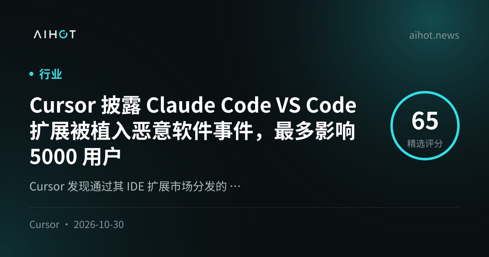
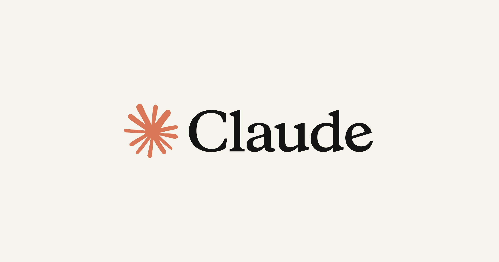
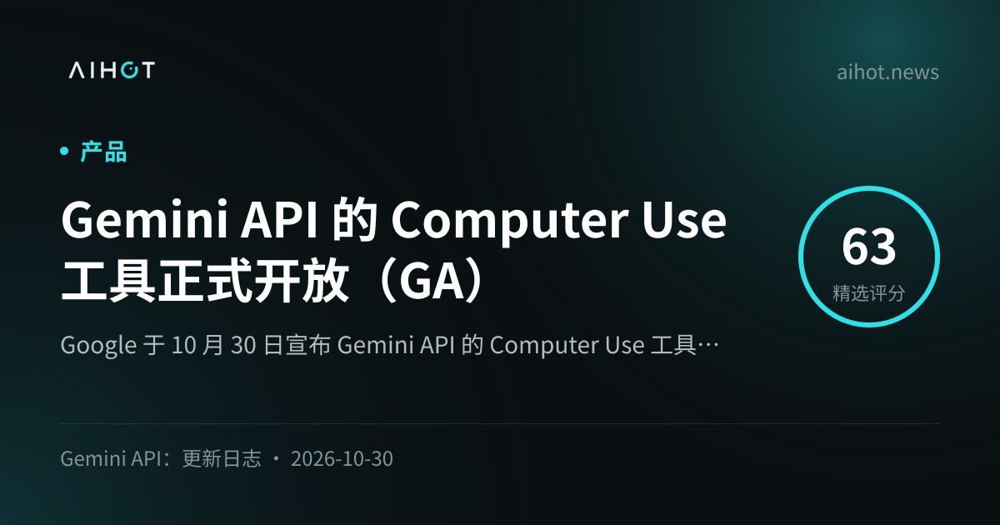
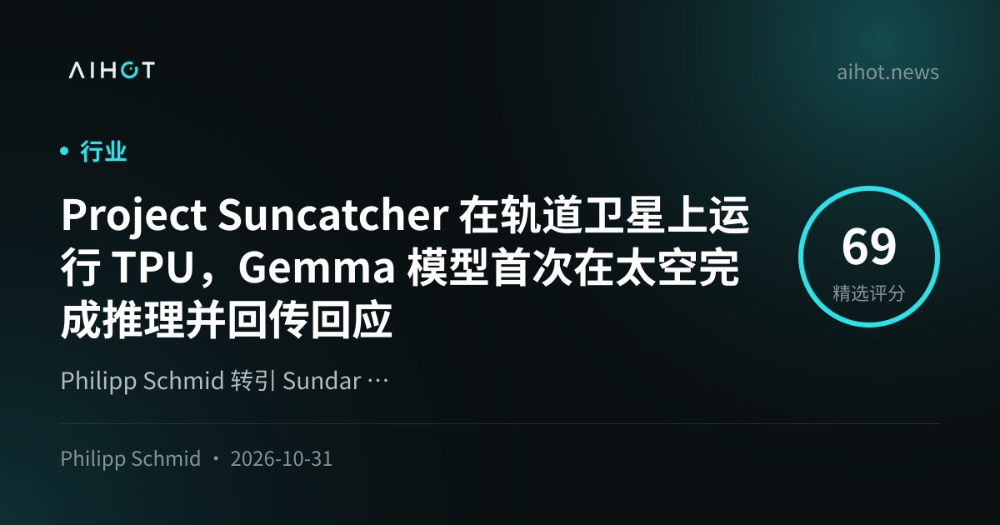
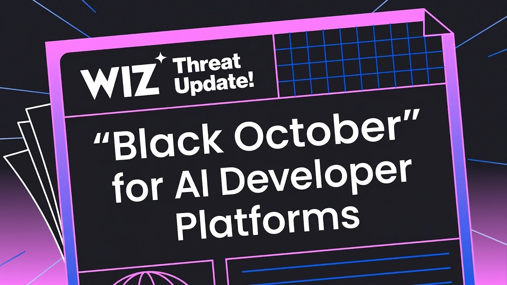
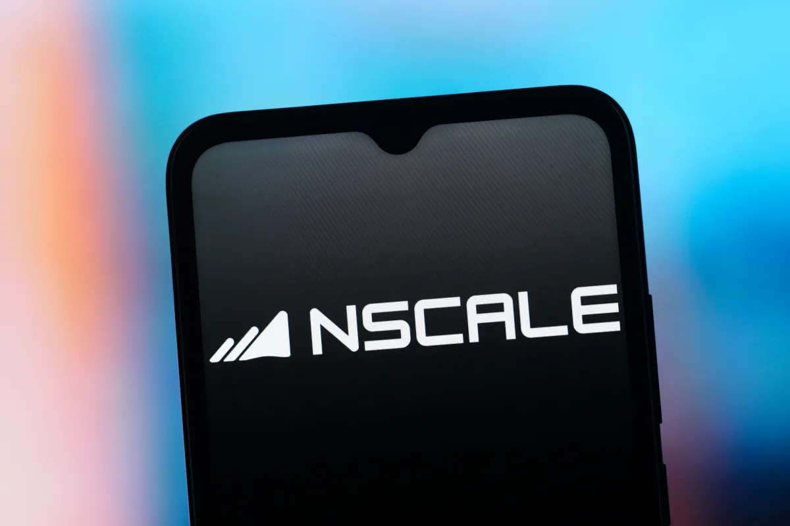
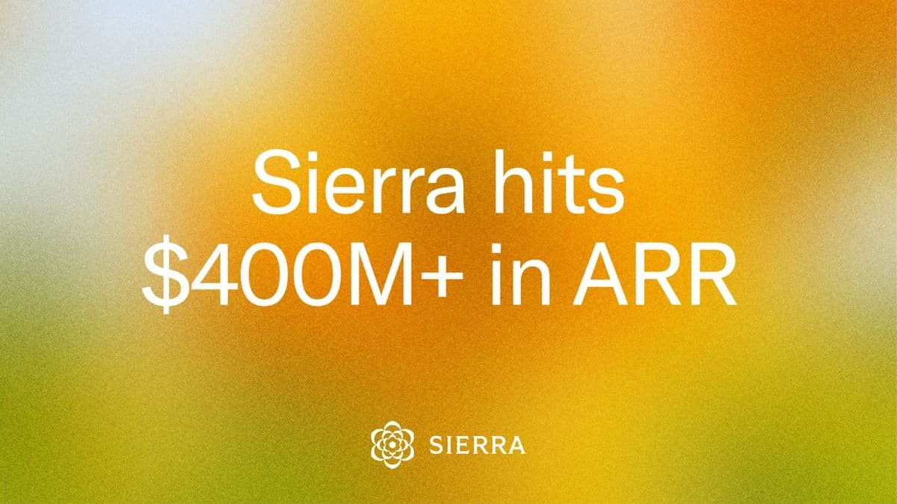

01安全 头条
Cursor 披露 Claude Code VS Code 扩展被植入恶意软件，最多约 5000 用户
10-30 15:46 北京时间周末头条 · 高互动官帖+安全通告独立来源 3 家

Cursor 安全通告 / AIHOT 封面（来源：cursor.com blog · AIHOT OG）
介绍
北京时间 10-30 15:46（UTC 07:46），@cursor_ai 披露：Cursor IDE 扩展市场中一份被篡改的 Anthropic.claude-code VS Code 扩展（2.1.312 / 2.1.313，Win/macOS）被植入恶意代码，最多影响约 5000 用户；恶意包并非 Anthropic 开发。官博写明窗口约 PT 10-29 02:27–13:35：载荷会采集主机/用户信息、试图写入 svc-telemetry SSH 公钥并建反向隧道/持久化；多数主机因缺管理员权限无法真正打开 SSH 服务，但密钥写入与信息外传仍发生。Cursor 当日下线市场、轮换密钥、重建市场，并与云厂商切断攻击者服务器；建议受影响用户按通告排查并升级到 Claude Code for VS Code 2.1.314。AIHOT 10-31 日报列为头条（另 3 家）。
为什么重要
IDE 扩展市场成为供应链攻击入口——「看起来像官方 Claude Code」的包直接碰到开发者机器上的凭据与 SSH。
要点
- 影响面：@cursor_ai 写 at most 5,000 users；恶意版本 2.1.312 / 2.1.313（非 Anthropic）
- 载荷：采集主机信息 · 写
svc-telemetry SSH key · 尝试反向隧道/LaunchAgent/计划任务；攻击端已下线 - 处置：下线并重建 marketplace · 升级 2.1.314 · 官博附 macOS/Windows 排查与 remediation 脚本
- 交叉：@cursor_ai + cursor.com 安全通告 + AIHOT
02产品
Anthropic 将 Claude Max 更名为 Max / Ultra；认证 Ultra 取消 5 小时限额
10-31 01:29 北京时间高互动官帖 · 定价页交叉独立来源 3 家

Claude 定价 / Max·Ultra 官宣图（来源：claude.com / @claudeai）
介绍
北京时间 10-31 01:29（UTC 10-30 17:29），@claudeai 宣布订阅更名：Max 5x → Max、Max 20x → Ultra，价格不变——Max $100/月、Ultra $200/月。即日起对多数已有订阅、已认证的 Ultra 账号取消 5 小时限额；较新账号保留临时限额直至通过认证（防欺诈），周限额不变。claude.com/pricing 与 anthropic.com/pricing 可交叉核对档位。AIHOT 10-31 日报收录（另 3 家，含 Ado Kukic）。
为什么重要
把「更高倍率」产品化成 Ultra，并用取消 5 小时窗换认证用户粘性——订阅分层叙事从倍数标签转向时长自由。
要点
- 更名：Max 5x→Max · Max 20x→Ultra；价仍 $100 / $200
- 限额：多数已认证 Ultra 取消 5 小时限制；新号临时限额；周限额不变
- 交叉：@claudeai + claude.com/pricing + AIHOT
03Agent
Gemini API Computer Use 正式 GA：Interactions 与 GenerateContent 双入口
10-30 北京时间官方 changelog · Agent 基建独立来源 2 家

Gemini API Computer Use（来源：AIHOT OG / ai.google.dev）
介绍
Google 在 Gemini API changelog 10-30-2026 将 Computer Use 工具标为 generally available：覆盖 Interactions 与 GenerateContent 两套 API。模型看截图、返回点击/键入/滚动等 UI 动作，客户端执行后再回传新截图，可搭浏览器、移动与桌面代理；文档写明可配置需确认的安全策略。AIHOT 10-31 日报收录；X 上多条开发者帖引用同一 changelog。
为什么重要
Computer Use 从预览进 GA，意味着「看屏点 UI」的 agent 能力进入可对标生产 API 的比较表。
要点
- 状态：Gemini API Computer Use GA（changelog 10-30-2026）
- 入口：Interactions + GenerateContent；截图→动作循环，含 safety / require_confirmation
- 交叉：ai.google.dev changelog + computer-use 文档 + AIHOT
04研究未证实项
Project Suncatcher：轨道卫星上跑通 TPU，Gemma 首次太空推理回传 haiku
10-31 01:05 北京时间Sundar 官帖 · 高互动独立来源 2 家

Project Suncatcher / Gemma 太空推理（来源：AIHOT OG · @sundarpichai 视频封面）
介绍
北京时间 10-31 01:05（UTC 10-30 17:05），@sundarpichai 发帖称 Project Suncatcher 迎来 “hello world”：原型卫星数周前发射后，团队成功向轨道发指令、启动 TPU、跑完 prompt，并在地面收到首个完整回应——一首 haiku。Philipp Schmid 等转述称 Gemma 成为首个在太空完成推理的大语言模型；AIHOT 10-31 日报收录（另 5 家）。blog.google 上尚未核对到独立长文（多路径 404），本条以 CEO 原推 + AIHOT/媒体交叉为主。
为什么重要
把「太空算力」从愿景压成一次可回传的完整推理——叙事价值大于即刻产能。
要点
- 里程碑：指令上行 → 启动 TPU → 完整回应回传（haiku）
- 模型叙事：社区/AIHOT 称 Gemma 为首个太空 LLM 推理
- 交叉：@sundarpichai + AIHOT（另 5 家）；官方长博未取到 → 见 flags
⚠ 官方长博（blog.google Suncatcher）本窗未取到独立 URL，细节以 CEO 原推与 AIHOT 交叉为准
05安全
Wiz「黑色十月」：至少 9 家 AI 开发者平台披露安全事件
10-31 北京时间安全专题 · 官博+多平台披露独立来源 4 家

Wiz Black October 研究封面（来源：wiz.io OG）
介绍
Wiz 研究博客将 2026 年 10 月钉成 AI 开发者平台的 「Black October」：至少 9 家平台披露事件（公开讨论点名含 Fireworks、Andromeda、Zeabur、Lightning AI、OpenCode、Railway、Warp、CommandCode，以及随后的 Northflank 等）。共性并非单一漏洞，而是攻击者猎取环境变量里的 AI API keys、再跑未付费模型流量（LLMjacking）；部分叙事提到 agent swarm。AIHOT 11-01 日报头条；X 上 IntCyberDigest 等跟进 Northflank「假设全部 env 已解密」的客户通告。
为什么重要
把分散的平台通告收成一条供应链故事——密钥存放位置，比某一个 CVE 编号更重要。
要点
- 规模：Wiz 统计至少 9 家 AI 开发者平台 10 月披露事件
- 手法：猎 env 中的模型 API key → LLMjacking；非单一共享漏洞
- 交叉：wiz.io 官博 + 各平台安全通告链 + AIHOT 头条 + X 跟进
06产品未证实项
OpenAI：Codex/Pro 用量翻倍；媒体称 12 月起 ChatGPT 与 Codex 共享 token 额度
10-30 00:56 北京时间官帖翻倍 + 媒体共享额度独立来源 3 家
OpenAI 额度调整（来源：AIHOT OG）
介绍
北京时间 10-30 00:56（UTC 10-29 16:56），@thsottiaux（OpenAI）发 Day 25：自即日起 Pro 100/200/500 与 Business Premium 全部用量限额翻倍；明确 不会再砍 Pro 200，Work 与 Codex 用量维持；Dot 的 extended limits 暂续且与默认用量分离。@OpenAI 官方转发该帖。另据 AIHOT 热点（The Decoder、数字生命卡兹克、IT之家、Rohan Paul 等）：帮助文档称 12 月起 ChatGPT 与 Codex 将共享 token 额度——本机对 help.openai.com 403，未直接核对官方帮助页原文，共享额度细节标依赖媒体/AIHOT。
为什么重要
一边立刻放量，一边把 ChatGPT 与 Codex 配额合并——订阅用户的「两套额度」叙事将被改写。
要点
- 已官宣：Pro 100/200/500 + Business Premium 用量翻倍（@thsottiaux · @OpenAI RT）
- 媒体线：12 月起 ChatGPT↔Codex 共享 token（AIHOT 热点第 4 · 多源媒体）
- 核对缺口：help.openai.com 本环境 403，共享额度未贴官方帮助 URL → flags
⚠ 未证实/未官核：ChatGPT+Codex 12 月共享 token 细节仅见媒体与 AIHOT；help.openai.com 本环境 403，未贴官方帮助原文
07产业未证实项
算力账单：Jassy 称 AWS 路径向 $1T；媒体写 ~$3T 承诺与 Nvidia/Nscale 担保
10-30—10-31 北京时间财报电话 + 媒体资本线独立来源 3 家

AI 基建 / Nvidia·Nscale 报道配图（来源：TechCrunch OG）
介绍
周末资本叙事三线并行：① TechCrunch 等报道 Amazon CEO Andy Jassy 在财报电话称 AWS 五到十年内可成 年营收约 $1T 业务，并展望 2026 现金 capex 约 $220B（大部分投向 AWS）。② 彭博统计经 IT之家等转述：Alphabet、Meta、微软、亚马逊、甲骨文未来数年数据中心等承诺投入超 约 $3T（谷歌承诺超 $1T、Meta 超 $800B 等）——单一媒体链，标未证实。③ TechCrunch / Bloomberg：Nvidia 洽谈为 Nscale 西弗吉尼亚 Anthropic 数据中心提供债务担保（报道称 Anthropic 已就首栋建筑签约约 $44.6B）——未获 Nvidia/Anthropic 官宣，标未证实。
为什么重要
模型发布之外，真正的约束正在变成「谁愿意为十年期机柜和电力签单」。
要点
- Jassy / AWS：路径向年营收 ~$1T · 2026 capex ~$220B（TC 等）
- ~$3T 承诺：五大厂多年支出（Bloomberg→IT之家）· 未证实
- Nscale 担保：Nvidia 洽谈为 WV Anthropic DC 担保债务（TC/Bloomberg）· 未证实
⚠ 未证实：Bloomberg ~$3T 五大厂承诺（经 IT之家转述，无公司逐条官宣）
⚠ 未证实：Nvidia 为 Nscale WV Anthropic DC 提供债务担保（TC/Bloomberg 报道，无官方确认）
08公司
Sierra 官宣 ARR 超 $400M：单季新增超 $150M，近半 Fortune 50
10-30 北京时间联合创始人官博独立来源 2 家

Sierra 增长官博封面（来源：sierra.ai OG）
介绍
10-30，Sierra 联合创始人 Bret Taylor / Clay Bavor 发博：上线约两年半后 ARR 达 $400M+，Q3 单季新增超过 $150M ARR——「一个季度的新增超过去年全年」；从 $100M→$200M 用 6 个月，从 $200M→$400M 仅 5 个月。客户侧写到服务近 50% Fortune 50；叙事强调按结果付费、Ghostwriter 把一家年收入 $40B+ 零售商从首会到上线压到 27 天，并推进开放标准 Poppy（点名 Meta、Shopify、Stripe、Walmart 等）。AIHOT 收录。
为什么重要
企业 agent 公司用加速翻倍的 ARR 曲线，回答「大模型之上谁在收结果费」。
要点
- ARR：$400M+ · Q3 新增 >$150M · $200M→$400M 约 5 个月
- 客户：近 50% Fortune 50；案例 27 天上线 · Poppy 开放标准
- 交叉：sierra.ai 官博 + AIHOT
AIHOT 日报 10-30…11-02 + hot/latest7d读到
Cursor/Ultra/Computer Use/Suncatcher/Wiz/Jassy/Nscale/$3T/Sierra/OpenRouter/Figma/Factory/Pika/Model Spec/Epoch 入窗；热点共享额度入主线 06
X 公开数据（官方账号/search）读到
@cursor_ai 扩展事件、@claudeai Ultra、@sundarpichai Suncatcher、@OpenAI/@thsottiaux 翻倍、@OpenRouter routing、@figma 等；Computer Use 缺官方大号原推、以 changelog 为准
你在窗口内发的推文（@HhhharryRen）读到 · 没更新
接口正常，窗口内 0 条
你的 X 收藏读到 · 没更新
可读约 33 条；窗口内 0 条 AI 资讯新书签
WaytoAGI 飞书知识库读到
sources/waytoagi.md 已合并：10-30 五条 + 10-31 六条 + 11-01 一条（GEO 公开课等）
官方页面核对读到
Cursor 安全通告；claude/anthropic pricing；Gemini changelog+Computer Use 文档；Wiz Black October；Sierra ARR 博；OpenRouter routing 博；Figma Weave；Factory Droid；Model Spec 2026-10-29；Epoch patch-gap。Suncatcher blog.google 多路径 404；help.openai.com 403
媒体交叉读到
TechCrunch（Jassy、Nscale）；Bloomberg 链（Nscale/$3T 经转述）；IT之家；BleepingComputer；卡兹克微信
窗外/已覆盖读到
10-29 Carbon/Mistral/Alphabet/Universe/Dot/MSFT/Verge S-1/PROLED 不重做；Codex 翻倍本窗升格